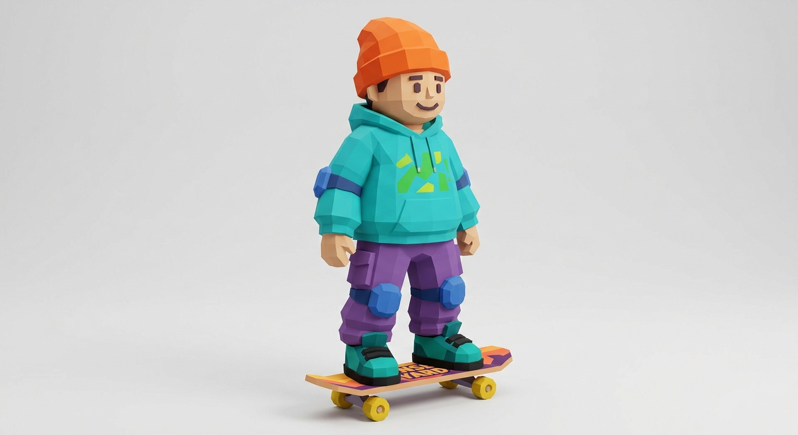
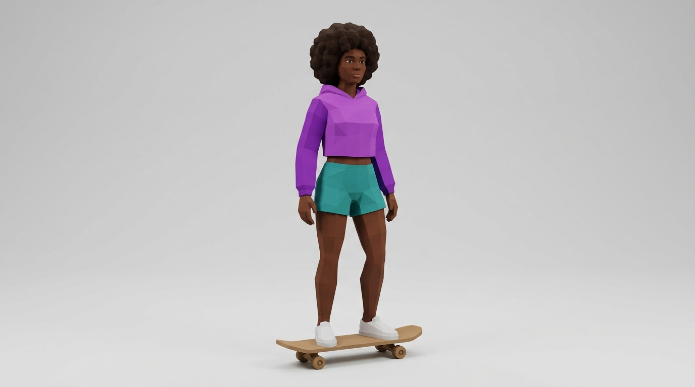
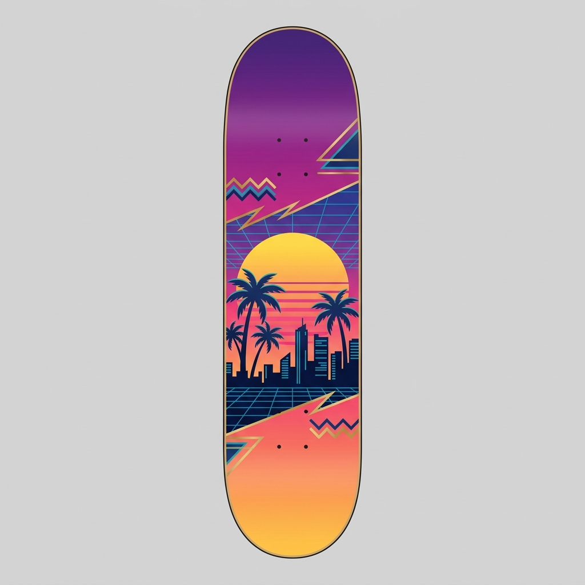

01An experiment, disguised as a game
The question wasn't "can an AI write a game." It was how far can today's models go when you let them orchestrate each other — design, build, generate art, critique their own output, and verify on a real device — with a human only steering.
The spark was a demo making the rounds: an FPS "built from a single prompt." The honest reality behind it was more interesting than the headline — that one prompt kicked off a large multi-agent orchestration: agents fanned out by subsystem, looped until a harsh critic agent was satisfied, and screenshot-diffed their work against a target. The "prompt" was a spark; the machinery was the story.
So we set out to build our own — an original arcade skater (no cloning anyone's IP), and to use every trick that machinery allows.
02Six versions, one afternoon-and-change
Start with the constraint
The first sandbox blocked external libraries (no Three.js), so v1 was a self-contained 2D side-view combo skater — grinds, manuals, tricks, one long multiplier chain. Honest but not what "Tony Hawk in the browser" pictures.
Move the walls, get real 3D
Re-hosting on our own server removed the library restriction, so we went to a hand-built 3D low-poly skatepark. Better — but flat, empty, a stick figure on a neon grid. Clearly a prototype.
The glow-up: agents grading agents
The big swing. A workflow: three art directors proposed visual identities → a judge picked one "art bible" → then seven rounds of the loop that actually matters — render the game headless → a harsh 3-critic panel literally looks at the screenshots and scores them → a builder rewrites toward the fixes → re-render. 47 agents, zero errors, ~2.7M tokens. The result was a night-and-day leap: a real skater, ramps, rails, chain-link fencing, power lines, dusk lighting, bloom.
AI-generated characters
A separate image model generated original concept art and a full character roster — women and men, varied skin tones, all curly-haired — plus usable textures (a skateboard deck graphic, an outfit sheet). Those drove an in-game character-select screen and got wired into the 3D model's skin / hair / outfit.



Make it actually playable
The unglamorous, decisive part. Fixed unreadable buttons, a nasty touch dead-lock (a dropped release event permanently killed a button), orientation cut-off, and added tilt-to-steer. A real mobile browser (driven by a different model on Browserbase) verified it — confirming the game plays, and pinpointing collision as the true remaining gap. Then a solid-collision layer: ride onto ledges, get blocked by walls.
Taste is a loop too
The first character remodel over-corrected into a fussy "mascot" that read weird. One more pass took it to a clean, simple blocky avatar — the look that actually landed.


03Five models, matched to the job
No single model did this. The interesting part is the routing — frontier judgment where it mattered, cheap or free execution everywhere else.
| Model | Role |
|---|---|
| Claude Opus 5 | The orchestrator + the multi-agent visual "glow-up" workflow (47 agents). The judgment layer. |
| Claude Sonnet | The implementation agents — character-select, collision, and both character remodels. Well-specified builds, done cheaply. |
| Codex / GPT | Real-browser QA on a live mobile Chromium, and the GitHub plumbing. Zero Claude quota. |
| Gemini 3.1 Flash Image | Every piece of character & texture art — concepts, the roster, deck & outfit sheets. |
| Claude Fable 5 | The always-on assistant that brokered the cross-model errands (image gen, fetches, repo, QA hand-offs). |
04What it cost
The follow-on build agents were an order of magnitude cheaper: character-select ~92k tokens (~7 min), collision ~149k (~22 min), the two restyles ~161k and ~82k tokens. The heavy spend was the one workflow where agents critiqued rendered frames on repeat.
05For fellow PMs
- "One prompt" is marketing. The leverage is orchestration — fan-out, loops, and adversarial critic agents. The prompt just starts the machine.
- Models can now grade their own visuals. A screenshot → harsh-critic → rebuild loop moved a flat prototype to a real-looking game. Vision-in-the-loop is the unlock, not just code generation.
- Route by difficulty, not by default. Opus for judgment, Sonnet for specified builds, Codex/Gemini for free execution. Same result, a fraction of the premium spend.
- Verification beats vibes. A real mobile browser, driven by a model, caught the touch dead-lock and the true collision gap that "looks fine" screenshots hid.
- The walls are real. Matching a concept render, tuning physics feel, and taste still take iteration and a human in the loop. The models go far — not all the way, alone.